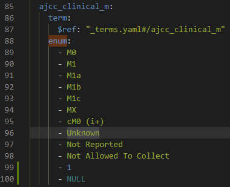

Preparing the Data Dictionary for a New Schema¶
Deleting Old Test Data¶
If you have any old test data, it will useful to delete it. To do this, following the GitHub guide., enter the following while your stack is down:
docker volume rm compose-services_esdata
docker volume rm compose-services_psqldata
Double check that in the Postgres database there is no data in, for example, the project node:
{kind=link}
Validating Existing Dictionary Schema¶
Gen3 has a repository for validating the Gen3 data dictionaries using JSON Schema. It can be useful to get this installed and ready to use for if and when you create your own custom data dictionary.
Setting up the dictionaryutils Aliases¶
Per the instructions in the GitHub repository, you can make an alias that runs a
dictionaryutils docker container. This alias is typically stored in a file
called your ‘.bash_profile. First, check to see if you have a file called ‘.bash_profile’ at your home repo:
cd ~
ls -lah
{kind=link}
If you don’t see ‘.bash_profile’, you can easily create one by typing touch ~/.bash_profile
in the terminal. To edit the ‘.bash_profile’ file, type nano ~/.bash_profile at the terminal.
Note
The example function provided in the GitHub repo, testdict(),
did not work for me. I suspect it had something to do with my using WSL.
Thus, I created a second function called testdictwsl() which overrides the
default command of the Dockerfile and substitutes one that seems to work on WSL.
I recommend putting both of these in your bash_profile and running whichever
one happens to work.
Copy and paste the following code into the file.
# if running bash - this ensures your .bashrc will be loaded
if [ -n "$BASH_VERSION" ]; then
# include .bashrc if it exists
if [ -f "$HOME/.bashrc" ]; then
. "$HOME/.bashrc"
fi
fi
# Gen3 Dictionary Validator Aliases
testdict() { docker run --rm -v $(pwd):/dictionary quay.io/cdis/dictionaryutils:master; }
testdictwsl() { docker run --rm -v $(pwd):/dictionary quay.io/cdis/dictionaryutils:master /bin/sh -c
"cd /dictionary; rm -rf build dictionaryutils dist gdcdictionary.egg-info;
python setup.py install --force && cp -r /dictionaryutils . && cd /dictionary/dictionaryutils;
pip uninstall gen3dictionary; nosetests / -s -v; export SUCCESS=$?; cd ..;
rm -rf build dictionaryutils dist gdcdictionary.egg-info; exit $SUCCESS"; }
After saving and exiting, source your bash profile with source ~/.bash_profile.
Validate the Default Dictionary Schema¶
To validate the default dictionary, move from the compose-services root to the
/datadictionary subfolder. Source and run testdict or testdictwsl,
depending on your system. See code below:
cd datadictionary
testdictwsl
The first time you run this, your machine may need to download the image from DockerHub. This will take several minutes. After the image is installed and run, you should see a long list of tests, with 23 passed tests. It should look something like the log below:
test_invalid_files (dictionaryutils.schema_test.SchemaTest) ... ok
test_schemas (dictionaryutils.schema_test.SchemaTest) ... ok
test_valid_files (dictionaryutils.schema_test.SchemaTest) ... ok
test_datamodel.test_datamodel ... ok
test_required_fields.test_required_nodes ... ok
test_required_fields.test_required_data_fields ... ok
test_required_fields.test_required_project_fields ... ok
test_required_fields.test_required_program_fields ... ok
test_required_fields.test_required_ubiquitous_fields ... ok
test_required_fields.test_id_matches ... ok
When a property is of type "enum", the "type" field should not ... ok
test_required_fields.test_arrays_have_items ... ok
If a property is not required, `null` type is automatically ... ok
test_required_links.test_require_core_metadata_collections ... ok
test_required_links.test_required_fields_in_links ... ok
test_required_properties.test_required_program_property ... ok
test_required_properties.test_required_project_property ... ok
test_required_properties.test_required_ubiquitous_properties ... ok
test_required_properties.test_required_internal_properties ... ok
test_schema_rules.test_no_mixed_type_in_enum ... ok
test_schema_rules.test_lowercase_ids ... ok
test_schema_rules.test_nodeid_length ... ok
test_simulate_data.test ...
Validating schemas against metaschema...
Validating 'Data Release'
Validating 'Root'
Validating 'Aliquot'
Validating 'Read Group QC'
Validating 'Family History'
Validating 'Clinical Test'
Validating 'Publication'
Validating 'Submitted Somatic Mutation'
Validating 'Core Metadata Collection'
Validating 'Keyword'
Validating 'Slide'
Validating 'Sample'
Validating 'Case'
Validating 'Read Group'
Validating 'Submitted Aligned Reads'
Validating 'Demographic'
Validating 'Aligned Reads Index'
Validating 'Diagnosis'
Validating 'Treatment'
Validating 'Experimental Metadata'
Validating 'Submitted Methylation'
Validating 'Exposure'
Validating 'Program'
Validating 'Submitted Copy Number'
Validating 'Slide Image'
Validating 'Slide Count'
Validating 'Submitted Unaligned Reads'
Validating 'Acknowledgement'
Validating 'Experiment'
Validating 'Project'
ok
----------------------------------------------------------------------
Ran 23 tests in 3.549s
OK
Schema Tests¶
A Note on Schemas¶
The schemas are what drive the data dictionary. They are located in ./datadictionary/gdcdictionary/schemas.
They follow JSON Schema convention. More information can be found in the following repo: https://github.com/NCI-GDC/gdcdatamodel
Before making changes to the data dictionary (gdcdictionary),
you’ll want to copy your old one and rename it as something else, e.g.
‘gdcdictionary_old’ or ‘gdcdictionary_copy’ Feel free to do this in a program
like VS Code (I do most of the programming in VS Code) or just simply in your
file explorer, or on Linux is fine.
Note
There appears to be a quirk with Gen3 where the dictionary MUST be named
gdcdictionary. So, just don’t rename it.
Note
If you mess up, you can always move back to your repo root and run
git reset --HEAD, which will pull down the current version to
replace your local version. This won’t affect anything in your /Secrets
folder, as this is ignored by git via the .gitignore file.
To test the validator, we are going to make changes to the data dictionary that are in violation of the tests. The tests can be found in the dictionaryutils GitHub repo mentioned above, specifically at this link.
test_required_properties.test_required_project_property¶
Comment out portions of the project.yaml file to violate the required property test.
Specifically, comment out anything having to do with dbgap_accession_number, which is a required property.
{kind=link}
{kind=link}
Running the test should yield 2 failures:
======================================================================
FAIL: test_required_fields.test_required_project_fields
----------------------------------------------------------------------
Traceback (most recent call last):
File "/usr/local/lib/python3.6/site-packages/nose/case.py", line 198, in runTest
self.test(*self.arg)
File "/src/tests/test_required_fields.py", line 52, in test_required_project_fields
assert field in schema["properties"], "{} is required for project".format(field)
AssertionError: dbgap_accession_number is required for project
======================================================================
FAIL: test_required_properties.test_required_project_property
----------------------------------------------------------------------
Traceback (most recent call last):
File "/usr/local/lib/python3.6/site-packages/nose/case.py", line 198, in runTest
self.test(*self.arg)
File "/src/tests/test_required_properties.py", line 20, in test_required_project_property
"as required".format(required)
AssertionError: dbgap_accession_number is required property for a project node, but not defined as required
----------------------------------------------------------------------
Ran 23 tests in 4.104s
FAILED (failures=2)
Uncomment the project.yaml file and run the test again. You should see everything pass.
test_schema_rules.test_no_mixed_type_in_enum¶
Find a schema with an enum (enumeration) data type. I chose diagnosis.yaml. Under properties, add values that do not share the data type of the enums - for instance, I added an integer and a NULL/None type to this enum.
{kind=link}
Running the test should yield 2 failures:
[2021-07-28 23:13:00,167][data-simulator simulate][ ERROR] Error: ajcc_clinical_m has mixed datatype. Detail ['M0', 'M1', 'M1a', 'M1b', 'M1c', 'MX', 'cM0 (i+)', 'Unknown', 'Not Reported', 'Not Allowed To Collect', 1, None]
FAIL
======================================================================
FAIL: test_schema_rules.test_no_mixed_type_in_enum
----------------------------------------------------------------------
Traceback (most recent call last):
File "/usr/local/lib/python3.6/site-packages/nose/case.py", line 198, in runTest
self.test(*self.arg)
File "/src/tests/test_schema_rules.py", line 20, in test_no_mixed_type_in_enum
), "{}: enum values should all be string".format(schema["id"])
AssertionError: diagnosis: enum values should all be string
======================================================================
FAIL: test_simulate_data.test
----------------------------------------------------------------------
Traceback (most recent call last):
File "/usr/local/lib/python3.6/site-packages/nose/case.py", line 198, in runTest
self.test(*self.arg)
File "/src/tests/test_simulate_data.py", line 9, in test
assert graph.graph_validation()
AssertionError
----------------------------------------------------------------------
Ran 23 tests in 3.877s
FAILED (failures=2)
Reverse the changes, save, re-run the tests, and ensure the tests pass.